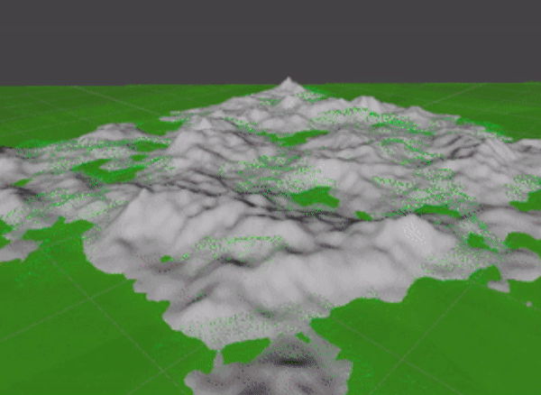
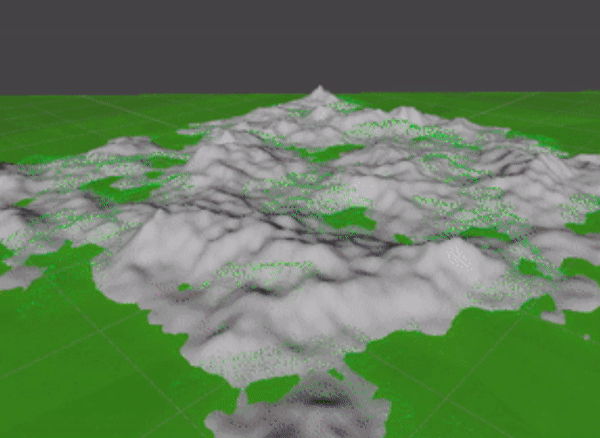

1
2
3
4
5
6
7
8
9
10
11
12
13
14
15
16
17
18
19
20
21
22
23
24
25
26
27
28
29
30
31
32
33
34
35
36
37
38
39
40
41
42
43
44
45
46
47
48
49
50
51
52
53
54
55
56
57
58
59
60
61
62
63
64
65
66
67
68
69
70
71
72
73
74
75
76
77
78
79
80
81
82
83
84
85
86
87
88
89
90
91
92
93
94
95
96
97
98
99
100
101
102
103
104
105
106
107
108
109
110
111
112
113
114
115
116
117
118
119
120
121
122
123
124
125
126
127
128
129
130
131
132
133
134
135
136
137
138
139
140
141
142
143
144
145
146
147
148
149
150
151
152
153
154
155
156
157
158
159
160
161
162
163
164
165
166
167
168
169
170
171
172
173
174
175
176
177
178
179
180
181
182
183
184
185
186
187
188
189
190
191
192
193
194
195
196
197
198
199
200
201
202
203
204
205
206
207
208
209
210
211
212
213
214
215
216
217
218
219
220
221
222
223
224
225
226
227
228
229
230
231 | using System.Collections;
using UnityEngine;
using UnityEngine.UI;
/// <summary>
/// This class generates the an procedural map.
/// </summary>
public class MapGenerator : MonoBehaviour
{
/// <summary>
/// The cunk size of the map that will come handy with calculations.
/// </summary>
const int mapSize = 241;
/// <summary>
/// The collor gradient of the map.
/// </summary>
[SerializeField]
private Gradient gradient;
/// <summary>
/// Lods of the map.
/// </summary>
[SerializeField]
[Range(0, 6)]
private int editorPrevieuwLOD;
/// <summary>
/// The number of octaves to use when generating noise map.
/// </summary>
[SerializeField]
private int ocataves;
/// <summary>
/// The seed used to generate the noise map.
/// </summary>
[SerializeField]
private int mapSeed;
/// <summary>
/// The persistance value used when generating the noise map.
/// </summary>
[SerializeField]
[Range(0, 1)]
private float presitance;
/// <summary>
/// The multiplier used to adjust the height of the mesh.
/// </summary>
[SerializeField]
private float meshHeightMultiplier;
/// <summary>
/// The lacunarity value used when generating the noise map.
/// </summary>
[SerializeField]
private float lacunarity;
/// <summary>
/// The scale of the noise map.
/// </summary>
[SerializeField]
private float noiseScale;
/// <summary>
/// The falloff map used to adjust the edges of the map.
/// </summary>
[SerializeField]
private float[,] fallOffMap;
/// <summary>
/// The curve used to adjust the height of the mesh.
/// </summary>
[SerializeField]
private AnimationCurve meshHeightCurve;
/// <summary>
/// The offset used to generate the noise map.
/// </summary>
[SerializeField]
private Vector2 offset;
/// <summary>
/// Determines whether or not to use the falloff map.
/// </summary>
[SerializeField]
private bool useFallOffs;
/// <summary>
/// Determines whether or not to use flat shading for the mesh.
/// </summary>
[SerializeField]
private bool flatShading;
/// <summary>
/// The object used to display the generated map.
/// </summary>
[SerializeField]
private GameObject terrainObject;
/// <summary>
/// The min terrain height of the generated map
/// </summary>
private float minTerrainheight;
/// <summary>
/// The max terrain height of the generated map
/// </summary>
private float maxTerrainheight;
/// <summary>
/// An public call for the generation of the map to be start.
/// </summary>
public void StartGenerating()
{
GenerateMap();
}
/// <summary>
/// Generates the map with the given specs.
/// </summary>
private void GenerateMap()
{
UnityEngine.Random.InitState(mapSeed);//seed
fallOffMap = FalloffGenerator.GenerateFalloffMap(mapSize);
float[,] noisemap = Noise.GenerateNoiseMap(mapSize, mapSize, mapSeed, noiseScale, ocataves, presitance, lacunarity, offset);
Color[] collorMap = new Color[mapSize * mapSize];
for (int y = 0; y < mapSize; y++)
{
for (int x = 0; x < mapSize; x++)
{
if (useFallOffs)
{
if (fallOffMap == null)
{
fallOffMap = FalloffGenerator.GenerateFalloffMap(mapSize);
}
noisemap[x, y] = Mathf.Clamp01(noisemap[x, y] - fallOffMap[x, y]);
}
}
}
MapDisplay display = FindObjectOfType<MapDisplay>();
display.DrawMesh(MeshGenerator.GenerateTerrainMesh(noisemap, meshHeightMultiplier, meshHeightCurve, editorPrevieuwLOD, flatShading, GetComponent<MapGenerator>()), TextureGenerator.TextureFromColourMap(collorMap, mapSize, mapSize));
StartCoroutine(ColorMap());
}
/// <summary>
/// Checks if values are positive
/// </summary>
private void OnValidate()
{
if (lacunarity < 1)
{
lacunarity = 1;
}
if (ocataves < 0)
{
ocataves = 0;
}
}
/// <summary>
/// Set min and max height of map for color gradient.
/// </summary>
/// <param name="noiseHeight"></param>
private void SetMinMaxHeights(float noiseHeight)
{
if (noiseHeight > maxTerrainheight)
maxTerrainheight = noiseHeight;
if (noiseHeight < minTerrainheight)
minTerrainheight = noiseHeight;
}
/// <summary>
/// Sets the color of the map.
/// </summary>
/// <returns></returns>
private IEnumerator ColorMap()
{
yield return new WaitForEndOfFrame();
Mesh mesh = terrainObject.GetComponent<MeshFilter>().mesh;
Vector3[] vertices = mesh.vertices;
Color[] colors = new Color[vertices.Length];
for (int i = 0; i < vertices.Length; i++)
{
SetMinMaxHeights(vertices[i].y);
float height = Mathf.InverseLerp(minTerrainheight, maxTerrainheight, vertices[i].y);
colors[i] = gradient.Evaluate(height);
new WaitForSeconds(0.001f);
}
mesh.colors = colors;
}
/// <summary>
/// Sets the mapSeed value to the text.
/// </summary>
/// <param name="text">text that will set the mapSeed value.</param>
public void MapSeed(Text text)
{
int myInt;
if (int.TryParse(text.text, out myInt))
{
mapSeed = myInt;
}
else
{
Debug.Log("Unable to parse value");
}
}
/// <summary>
/// Sets the presitance value to the slider.
/// </summary>
/// <param name="slider">Slider that will set the presitance value.</param>
public void SetPrestance(Slider slider)
{
presitance = slider.value;
}
/// <summary>
/// Sets the noiseScale value to the slider.
/// </summary>
/// <param name="slider">Slider that will set the noiseScale value.</param>
public void SetnoiseScale(Slider slider)
{
noiseScale = slider.value;
}
}
|
 
